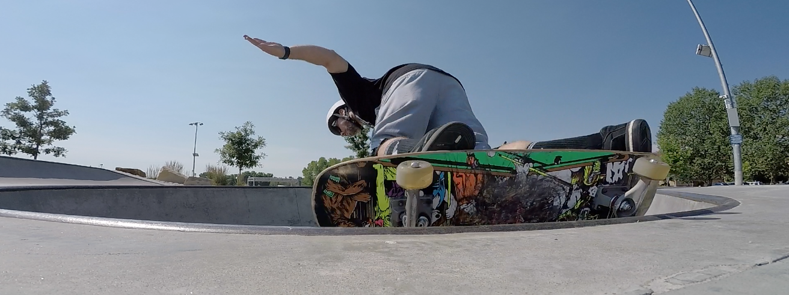

Skateboarders
Skater stereotype?
Why are skateboarders the way they are?
3/27/25 Owen Moore
Skater stereotype?
Skaters as stoners who destroy public property and are rude to others. But there are reasons people say that. I feel that people see skaters as stoners cause people are always smoking at the skateparks but a lot of the time that's not even skaters it's just passersby who want to look cool and fit in. Since people always think skaters are these things that they notice, people never noticed the nice skaters who help the community and are nice to everyone. Usually people just remember the bad and disruptive ones and that leaves a longing impact on them.
Why do skaters do the activities they do?
A Lot of people complain about skaters not staying in the skatepark or not staying off the streets but in the skate world it's more respected and impressive to do tricks on the streets. It's almost like the skatepark is where skaters practice and the streets are where they play their games. I think it would also be very beneficial if the surrounding towns all had skateparks. Skating is one of the last sports remaining that has so much freedom left. Skaters take everyday objects and make them into unique objects that make for amazing tricks. Skateboarding is one big rebellion. Using stair sets and ledges and bumps on sidewalks to perform tricks.
| Town | Skatepark |
|---|---|
westfield |
Yes, but it is known as one of the worst parks around us.
|
Springfield |
There is no park in springfield.
|
Agawam
| Yes, it is probably the best skatepark within a 30 minute drive
|
West Springfield
| Yes, it's pretty new and in a nice area |